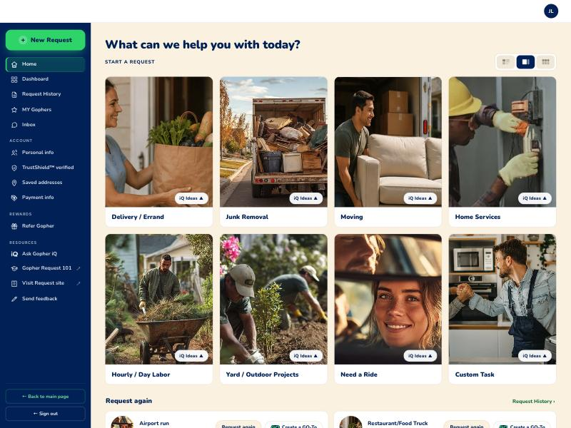
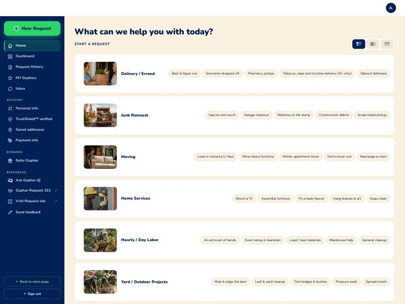
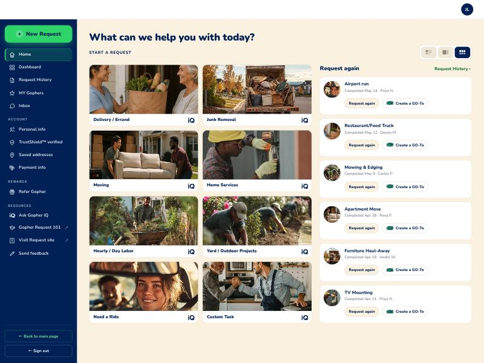
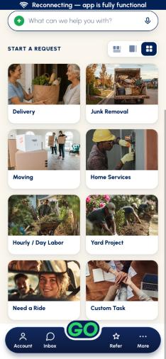
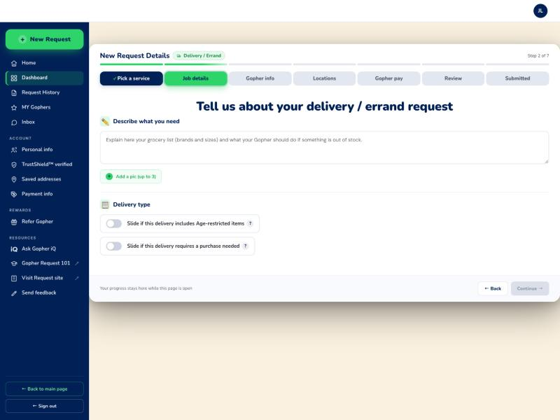

Request home — web vs app, after the 10/12 pass
The web home as it stands after a day of changes, against the app as the desk has it built. This replaces the 10/11 comparison, which described a web home that no longer exists.
What each column is
- Web — captured today from
Final/gopher-request.htmlat 1440×1080, after the deploy ofb11226e. Live on both hosts. - App — the desk's canonical
N-shell set fromlive-to-new-flow-master-assets/. Not the prototype. - ⚠️ Form factor is the honest difference and most of what follows comes from it: a phone shows one column, a 1440px dashboard shows four or has room for a second column beside the grid. Where the web diverges for that reason it is noted as such, not as drift.
Big cards — the app's default
The app shows one card at a time with an iQ Ideas ▲ pill; the web shows four across with the same pill in the same corner.


| Web | App | |
|---|---|---|
| iQ Ideas pill | Bottom right of the photo | Bottom right of the photo |
| Photo tap | Straight to Step 2 | Straight to Step 2 |
| Cards visible | Eight, four across | One, swiped |
| Sub-copy | None — the app's one-liner per card is not ported | One line under each name |
Row — the compact list
The app stacks its categories with history beneath. The web uses the width to put each category's five examples on its own row.


| Web | App | |
|---|---|---|
| Examples | Five pills per row, the app's own words | The same five, as chips |
| Thumbnail | 118×84 photo | Photo |
| Where they sit | Beside each category, using the width | Under the rail |
Doubles — two across
The closest the two have come. The app calls this doubles; the web's All-at-once became two across on 10/12, so the grids now match — and the web spends its spare width on Request again rather than on more columns.


| Web | App | |
|---|---|---|
| Grid | Two across, four down | Two across |
| Request again | A column to the right, level with the grid | Below the categories |
| Per card | Request again and Create a GO-To | Request again |
Step 2 — a tapped example
The behaviour the owner ruled on 10/5, now on both: the box opens empty and the chosen idea shows as guidance, never as text to delete.


| Web | App | |
|---|---|---|
| Box contents | Empty | Empty |
| Guidance | Placeholder, #707070 | Placeholder, #707070 |
| Wording | Ported from iqIdeas.js, unedited | Source of truth |
| Category chip | One-tone mark | Mark |
| Step tracker | Seven labelled tabs, clickable | A seven-segment bar plus “Step 2 of 7” |
| Category shown as | A small chip beside the title | A full-width card with Change › |
What is still different, and whether it should be
| Difference | Why | Worth closing? |
|---|---|---|
| Card sub-copy | The app shows a one-liner under each category name. The web shows none — those words are in the desk's master and were never ported. | Yes. .hv-ds is already styled and empty, waiting for them. |
| Per-request icons | The live strip, request cards and detail title still draw emoji from each record (👷, 🛒). Records carry no category, so nothing maps a mark to them. | Yes, but it needs a decision: add a category per record, or choose an icon each. |
| Request again placement | Web puts it in a right-hand column; the app stacks it below. | No — this is the width, not drift. |
| Create a GO-To on the card | Web only. The app creates a GO-To from Request History. | No — owner asked for it on 10/12. |
| Step tracker | ⚠ Corrected 2026-10-12, same day. This row first said the app has no step tracker. It does — a seven-segment bar with “Step 2 of 7”. The “no tracker” ruling I took that from describes the GO-To setup sheet, a different screen, and I generalised it to the whole flow. The real difference is that the web's seven are labelled and clickable and the app's are plain segments. | CLOSED — owner 2026-10-12: “disregard my 1. web stays and app stays.” A deliberate divergence, not drift. Do not re-raise it. |
| Category card | The app puts the category in a full-width card with a Change › link at Step 2. The web shows a small chip beside the page title, with no way back to the picker from there. | Probably. The chip says which category; it does not offer the way out that the card does. |
| Greeting | Closed 10/12: the web dropped "Welcome back" and moved the name into the headline, matching the app. | Done. |
The step tracker — three ways, none of them obvious
Not a parity fix, because the web has something the app cannot: room for labels, and therefore the option of letting someone jump straight back to a step. Worth a decision rather than a default.
| Option | What it is | What it costs |
|---|---|---|
| A — keep the tabs | Leave it as it is. Seven labelled, clickable tabs, which is more than the phone can offer and uses the width the dashboard actually has. | The two surfaces keep looking different at the top of every step. |
| B — the app's bar | Replace the tabs with the app's seven-segment bar and “Step N of 7”. Identical to the phone. | Loses direct navigation. Going back three steps becomes three taps of Back. |
| C — the bar, plus the labels under it | The app's segmented bar for the progress read, with the step names kept beneath it and still clickable. | Taller than either, and it is a web-only shape — a third thing rather than one of the two. |
⛔ DECIDED — A, by the owner, 2026-10-12: “disregard my 1. web stays and app stays.” He first said to match the apps, then withdrew it once the conflict was put to him: the web's bar already matches the app's seven segments and “Step 2 of 7”, so “match the apps” would only have deleted the labelled tabs underneath — and those tabs are the tap-to-change affordance he had just given as the reason the web needs no category card. B would have removed the thing that made 3 the right answer. Both surfaces stay as they are, on purpose.